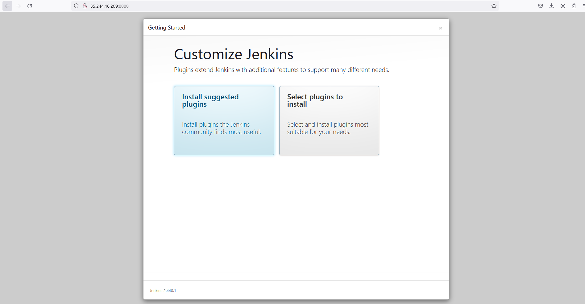
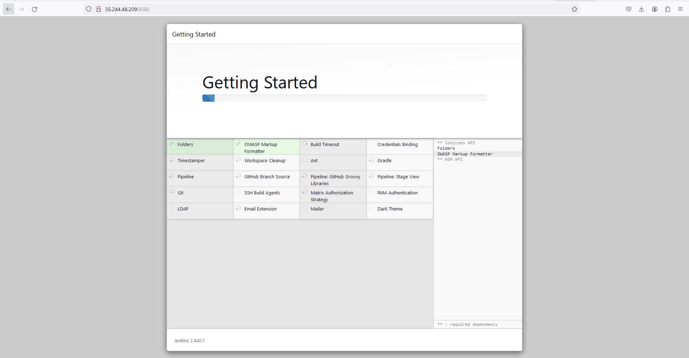
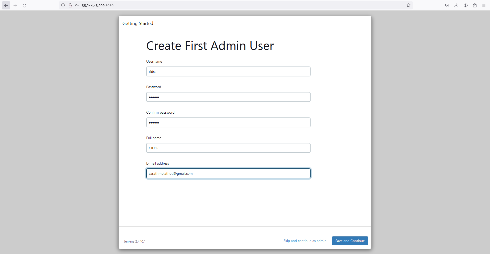

Setting Up Jenkins on a Debian-Based Operating System
Posted on July 17, 2024
Jenkins is a popular open-source automation server used for continuous integration and delivery (CI/CD). This guide will walk you through the steps to set up Jenkins on a Debian-based operating system.
Prerequisites
- A Debian-based operating system installed.
- Root or sudo privileges on your system.
- Access to the internet to download packages.
Step-by-Step Installation
Step 1: Add Jenkins Debian Repository
1. Visit the Jenkins Package Repository, select Debian-stable as your OS, and follow the provided commands to install Jenkins.Else go through the below commands to install Jenkins
2. Add the Jenkins Key:
sudo wget -O /usr/share/keyrings/jenkins-keyring.asc https://pkg.jenkins.io/debian-stable/jenkins.io-2023.key3. Add Jenkins Repository Entry:
echo deb [signed-by=/usr/share/keyrings/jenkins-keyring.asc] https://pkg.jenkins.io/debian-stable binary/ | sudo tee /etc/apt/sources.list.d/jenkins.list > /dev/nullStep 2: Update Package Index and Install Jenkins
1. Update the Local Package Index:
sudo apt-get update2. Install Java Runtime Environment:
sudo apt-get install fontconfig openjdk-17-jre3. Install Jenkins:
sudo apt-get install jenkinsStep 3: Start and Enable Jenkins Service
1. Start Jenkins:
sudo systemctl start jenkins2. Enable Jenkins to start at boot:
sudo systemctl enable jenkins3. Check Jenkins Status:
sudo systemctl status jenkinsStep 4: Access Jenkins
Jenkins is now installed and running on your server. You can access
the Jenkins web interface by navigating to
http://<your-server-ip>:8080 in your web browser.
In this example, the IP address is 35.244.48.209, so you
would go to http://35.244.48.209:8080.
Step 5: Unlock Jenkins
When you first access Jenkins, it will ask you for an initial admin password. Retrieve this password by running:
sudo cat /var/lib/jenkins/secrets/initialAdminPasswordThe output will be a password string, for example:
c7df0c00f72c4c2296506b295df7edbaStep 6: Customize Jenkins
1. Install Suggested Plugins:
After entering the initial admin password, Jenkins will prompt you to install plugins. Click on "Install suggested plugins" to begin the installation process.
 2. Create Admin User:
After the plugins are installed, Jenkins will prompt you to create an admin user. Fill in the details to create your Jenkins admin account.
You have successfully installed and set up Jenkins on your Debian-based system. You can now start configuring your Jenkins jobs and pipelines to automate your development workflow. For further customization and advanced configurations, refer to the Jenkins Documentation.